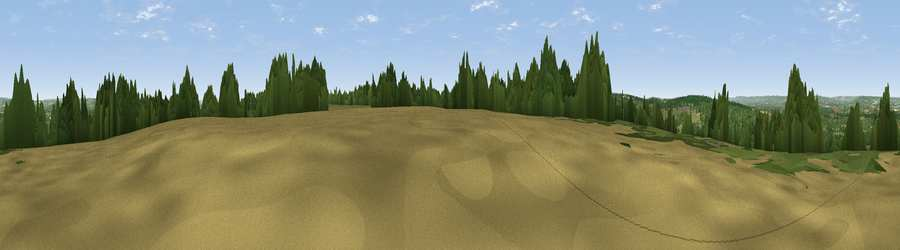

Viewpoint near Matfield
#29615 in England · top 31% of its area beats it · near MatfieldWhere it is
The exact computed spot (TQ 65775 42825). Click the marker for map links.
The view, rendered

A 360° render of this exact spot computed from the terrain model, tree cover and land cover — summer colours, afternoon light, calibrated against photographs of famous viewpoints. Real trees, hedges and buildings will differ in detail.
The panorama
Grey silhouette: terrain skyline in each direction (720 bearings, Earth curvature and refraction included). Dashed green: skyline with trees (+15 m) and buildings (+8 m) as obstacles. Blue strip: how far the ground is visible on each bearing.
Where the view opens
Wedge length = distance to the farthest visible ground on that bearing (vegetation-aware). Rings at 10, 25 and 50 km.
What fills the view
39% grassland · 39% woodland · 15% cropland · 5% built-up
Angular shares of the visible panorama (visual magnitude), not map area. Landscape diversity 0.52 (0–1 Shannon).
Key numbers
More beautiful places nearby
The staircase of upgrades: each row has a higher view potential than everything closer. Driving times are estimates from straight-line distance, calibrated against real road routing — check an actual route before setting out.
| Place | Direction | Drive | Score |
|---|---|---|---|
| Viewpoint near Brenchley | ESE · 2 km | ~6 min | 51.9 |
| Viewpoint near Brenchley | ESE · 2 km | ~6 min | 55.0 |
| Viewpoint near Bidborough | W · 9 km | ~17 min | 57.2 |
| Viewpoint near Shipbourne | NW · 14 km | ~25 min | 69.1 |
| Viewpoint near Westwell | E · 33 km | ~51 min | 72.2 |
| Viewpoint near Fairlight | SSE · 37 km | ~56 min | 74.7 |
| Viewpoint near Fairlight | SSE · 37 km | ~56 min | 75.1 |
| Viewpoint near Fairlight | SSE · 37 km | ~56 min | 76.7 |
51.16066, 0.36938 · source: screening · position refined by local search. Computed location — check access rights before visiting.